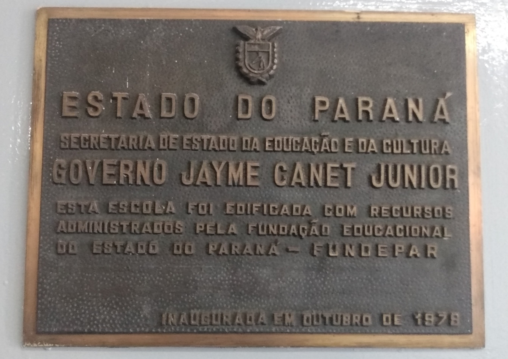
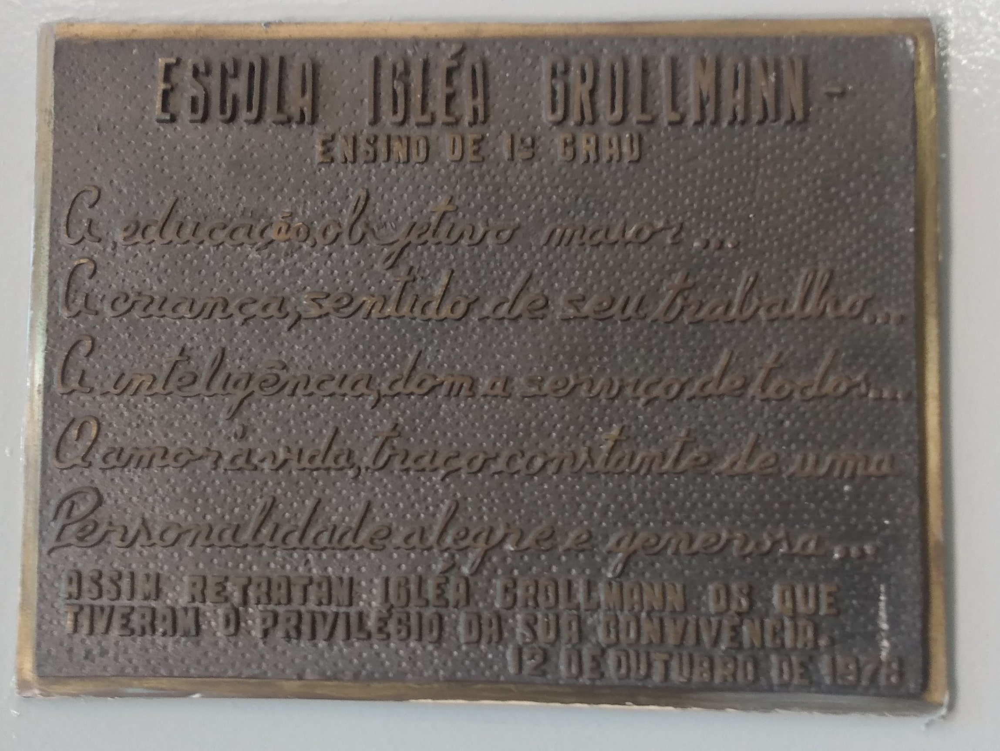

Colégio Estadual Igléa Grollmann O Colégio pertenceu ao complexo escolar Maria Luzia orieta Negrão - ensino de 1° e 2° graus, resultante da reorganização do grupo escolar Vicente Machado e da nova unidade denominada unidade polo. Em decorrência destes atos os estabelecimento de ensino passaram a denominar-se escola Vicente Machado - ensino de 1° grau, atendendo as quatro séries iniciais e Escola Igléa Grollmann - ensino de 1°grau, atendendo as séries finais. A partir de 1983 esse estabelecimento de ensino passou a denominar-se Colégio Estadual Igléa Grollmann - ensino de 1° e 2° graus. No ano de 1993 passou a atender o ensino especial. Com as mudanças ocorridas através da nova lei de diretrizes e bases a partir de 1997 começou o estudo de uma nova proposta curricular que correspondesse às exigências do mundo atual e após várias reuniões pedagógicas leitura e estudos dos parâmetros curriculares nacionais, elaborou-se uma proposta curricular para o ensino
Escola edificada com recursos administrados pela fundação educacional do estado do Paraná - FUNDEPAR.Inauguração em Outubro de 1978
Assim retratam Igléa Grollmann os que tiveram o privilégio da sua convivência.
Período Vespertino
| Turma | Periodo |
|---|---|
| 6° A | Vespertino |
| 6° B | Vespertino |
| 6° C | Vespertino |
| 6° D | Vespertino |
| 7° A | Vespertino |
| 7° B | Vespertino |
| 7° C | Vespertino |
| 7° D | Vespertino |
| 8° E | Vespertino |
Período Matutino
| Turma | Período |
|---|---|
| 8° A | Matutino |
| 8° B | Matutino |
| 8° C | Matutino |
| 8° D | Matutino |
| 9° A | Matutino |
| 9° B | Matutino |
| 9° C | Matutino |
| 9° D | Matutino |
| 1° A | Matutino |
| 1° B | Matutino |
| 1° C | Matutino |
| 1° D | Matutino |
| 2° A | Matutino |
| 2° B | Matutino |
| 2° C | Matutino |
| 2° D | Matutino |
| 3° A | Matutino |
| 3° B | Matutino |
| 3° C | Matutino |
| Vespertino | Matutino |
|---|---|
| 261 | 653 |
A matemática começou a se tornar importante e foi sendo desenvolvida por conta da necessidade de registrar o tempo, bens, calcular terras e criar os comércios. Os textos numéricos mais antigos são datados de, aproximadamente, 3000 a.C., encontrados na Mesopotâmia. Eram feitos na escrita cuneiforme. Antes da criação da escrita, o homem da pré-história já aprendia a contar os dias e anos, além de saber os sistemas de subtração, adição, multiplicação e divisão. Um dos sistemas numéricos mais conhecidos é o Papiro de Rhind, dos egípcios, criado em aproximadamente 1600 a.C. Reunia as regras para calcular equações simples de primeiro grau, adições e subtrações de frações, medições de superfícies e volumes, e problemas de aritmética. A matemática foi ficando mais sofisticada quando as civilizações começaram a usar a aritmética e a geometria. Elas eram utilizadas na astronomia, em construções e cálculos financeiros. O primeiro instrumento para calcular foi batizado com o nome de ábaco, desenvolvido e aperfeiçoado na China. Hoje em dia ainda é visto, principalmente no ensino à crianças. Consiste em bastões verticais com elementos de contagem inseridos. Tales de Mileto, filósofo e matemático da Grécia Antiga, foi quem trouxe o “Teorema de Tales”, iniciando com a matemática dedutiva. Através de seus Teoremas saíram as definições de ângulo reto, triângulo isósceles e seus ângulos, ângulos opostos e ângulos congruentes. Já o Teorema de Pitágoras, criado em aproximadamente 550 a.C., foi outra grande descoberta na história da matemática. Neste Teorema, é analisado o triângulo retângulo, em que a soma dos quadrados dos catetos é igual ao quadrado da hipotenusa. Seus estudos foram importantes para a criação das definições de números irracionais. Além disso, definiu-se os números primos e a teoria das proporções. O povo Hindu criou, aproximadamente no ano 500, o sistema numérico decimal do qual é usado até hoje. Foram eles que criaram o conceito do número 0 para a matemática. Na Europa, os franceses François Viète e René Descartes desenvolveram cálculos algébricos. Nessa mesma época, as tabelas de logaritmos foram criadas. Criação esta importante para os avanços científicos. A primeira máquina capaz de calcular somas e subtrações com números de até seis dígitos foi criada em 1642, por Blaise Pascal, físico e matemático francês. A matemática se dissemina por diversas áreas, transmitindo seus conhecimentos cultivados ao longo da história, complementando estudos e possibilitando novos. Novas invenções são feita com base em cálculos. O avanço da humanidade também depende dos números

Link para a imagem

Link para a imagem
Link para o video do Aula Paraná
Professora:Pryscilla Gaertner
Qual sua matéria favorida
Matematica Quimica Fisica Pensa.Compu. Biologia FilosofiaTurma:1° A